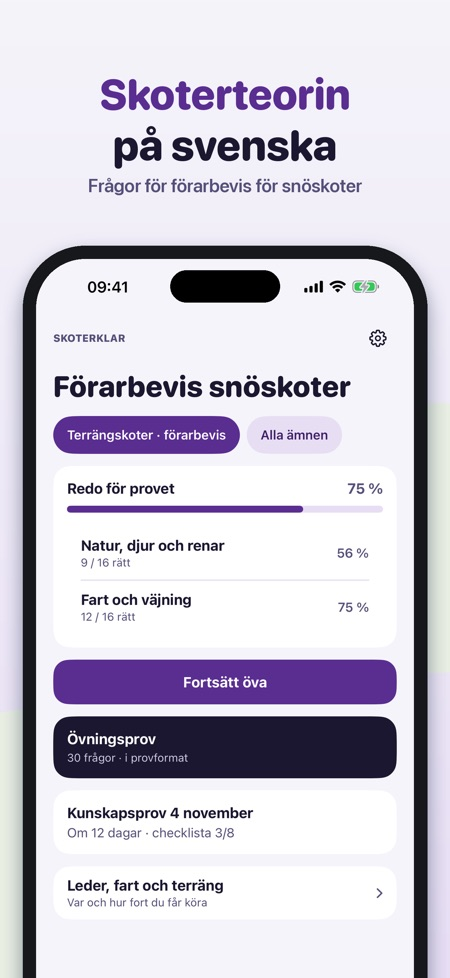
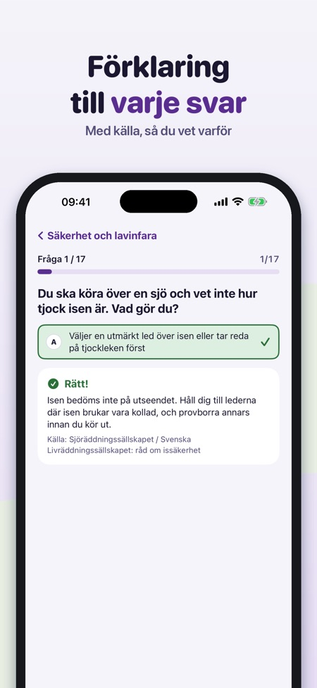
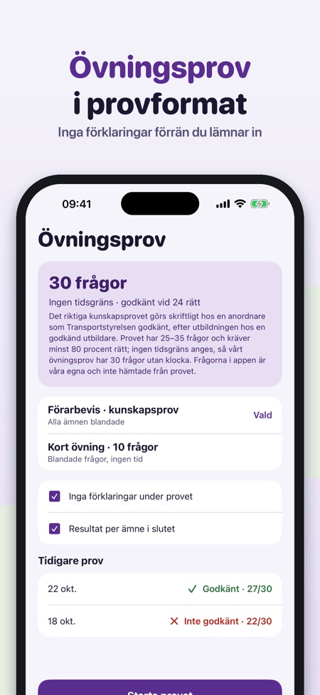

Skoterklar hjälper dig att öva inför kunskapsprovet för förarbevis för snöskoter, med skoterregler och inte bilregler.



Kunskapsprovet för förarbevis för snöskoter.
Skoterregler, inte bilregler.
Ja, övningsprov i provformat. Utan köp kan du göra korta övningsprov med 10 frågor.
Ja, den fungerar utan internet.
Frågor för Sverige, Norge och Finland.
20 frågor, korta övningsprov med 10 frågor, ordlistan och checklistan.
Nej. Fullversionen är ett engångsköp som låser upp alla frågor, övningsprov och statistik. Ingen prenumeration.
Nej, provet gör du hos en utbildare. Appen är fristående och inte kopplad till Transportstyrelsen eller någon utbildare.
Skoterklar hjälper dig att öva inför kunskapsprovet för förarbevis för snöskoter – med skoterregler, inte bilregler.
Du kan öva 20 frågor, göra korta övningsprov med 10 frågor och använda ordlistan och checklistan utan köp. Fullversionen är ett engångsköp som låser upp alla frågor, övningsprov och statistik. Ingen prenumeration.
Skoterklar är fristående och inte kopplad till Transportstyrelsen eller någon utbildare. Provet gör du hos en utbildare. Frågor för Sverige, Norge och Finland.